1과목: 화재조사론
1. 자동화재탐지설비 및 시각경보장치의 화재안전기준상 감지기를 설치하지 아니하는 장소로 명시되지 않은 것은?
2. 화재가 발생한 후 현장에 놓여 있던 가정용 LPG 용기가 가열되어 폭발이 발생하였을 때, 이 폭발의 원인으로 옳은 것은?
3. 화재조사 및 보고규정상 화재조사 활동 중 소방청장에게 긴급상황을 보고해야 하는 화재 중 중요화재에 해당되지 않는 것은?
4. 다음은 과학적인 조사방법론에서 어떤 단계에 대한 설명인가?
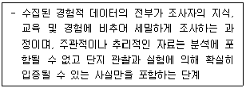
5. 고체 위의 화염확산에 대한 설명 중 틀린 것은?
6. 목재 표면의 균열흔 중 홈이 반월형의 모양으로 높아지며, 특히 대규모 건물화재에서 볼 수 있는 것은?
7. 화재조사 및 보고규정상 소방활동구역의 설정 및 현장보존에 대한 설명 중 틀린 것은?
8. 소방기본법령상 화재조사를 하는 관계공무원이 관계인의 정당한 업무를 방해하거나 화재조사를 수행하면서 알게 된 비밀을 다른 사람에게 누설하였을 때의 벌칙기준으로 옳은 것은?
9. V자 화재패턴에 대한 설명으로 옳은 것은?
10. 연소범위가 2.5~81vol%인 아세틸렌의 위험도로 옳은 것은?
11. 분진폭발을 가스폭발과 비교할 때 분진폭발의 특징으로 옳은 것은?
12. 목재의 탄화심도 측정 시 유의사항 중 틀린 것은?
13. 프로판 50vol%, 메탄 30vol%, 수소 20vol%의 조성으로 혼합된 가연성연료가 공기 중에 존재한다고 할 때 이 연료가스의 연소하한계(LFL)는? (단, 프로판의 LFL은 2.1vol%, 메탄의 LFL은 5vol%, 수소의 LFL은 4vol% 이다.)
14. 열전달에 대한 설명 중 틀린 것은?
15. 화재현장 조사를 할 때 유의해야 할 사항 중 틀린 것은?
16. 화재현장에서 화재감식요원의 마음가짐과 가장 거리가 먼 것은?
17. 비가연성 재료로 구획된 방의 각 위치에 동일한 방법으로 동일한 가연물에 착화하여 동일한 시간이 경과된 후의 모습을 관찰하였을 때의 설명으로 옳은 것은?
18. 연소 현상 중 완전연소에 대한 설명으로 옳은 것은?
19. 가연물별 분류에 따른 화재와 색상이 옳은 것은?
20. 액체가연물이 연소되면서 발생되는 열에 의해 가열되어 주변으로 튀거나, 액체를 뿌릴 때 바닥 면에 액체 방울이 튄 것처럼 연소하는 패턴으로 옳은 것은?
2과목: 화재감식론
21. 혼합해도 폭발 또는 발화 위험과 가장 거리가 먼 것은?
22. 방화의 일반적인 특징으로 틀린 것은?
23. 화재나 폭발에 대한 가설로부터 의견을 개진할 때에 조사관이 세우는 확신 수준으로서 '상당히 근거 있음(Probable)'은 가설이 진실일 가능성이 얼마 이상인 경우에 해당하는가?
24. 표준상태 0℃, 1기압에서 메탄(CH4) 3.2kg을 이상기체 상태방정식으로 계산하면 부피는? (단, 기체상수(R) : 0.082 L·atm/mol·K, 탄소 원자량 : 12, 수소 원자량 : 1로 계산한다.)
25. 방화로 의심할 수 있는 경우가 아닌 것은?
26. 산불의 강도를 가중시키는 지형으로 틀린 것은?
27. 자동차 본체의 주요장치에 포함되지 않는 것은?
28. 산불화재 확산에 영향을 미치는 요인으로 가장 거리가 먼 것은?
29. 석유류의 연소특성에 대한 설명 중 틀린 것은?
30. 담뱃불의 착화가능성에 대한 설명으로 옳은 것은?
31. 가스 연소 현상에서 역화(Flash Back)의 원인으로 가장 거리가 먼 것은?
32. 자동차화재의 특성에 대한 설명으로 옳은 것은?
33. 분진폭발을 일으킬 가능성이 없는 것은?
34. 세탁기 화재 시 확인해야 할 조사요점으로 가장 거리가 먼 것은?
35. 선박의 구획 및 일반배치에 대한 설명 중 틀린 것은?
36. 항공기 화재방지계통(fire protection system)에서 “Fixed”의 정의에 대한 설명 중 틀린 것은?
37. 석유류를 사용한 방화현장에서 수거한 증거물로부터 화재원인 물질을 밝혀내기 위해 사용하는 가장 일반적인 분석기기로 옳은 것은?
38. 어떤 도체의 단면을 0.5초간에 0.032C 의 전하가 이동했을 때, 흐르는 전류(I)의 크기는?
39. 정전기 대전현상에 대한 설명 중 옳은 것은?
40. 발화원인 판정 시 발화가능성이 있는 시설이나 기구에 대한 주의사항 중 틀린 것은?
3과목: 증거물관리 및 법과학
41. 열가소성 도체 절연체가 도체의 열로 인해 연화되고 늘어나는 현상으로 옳은 것은?
42. 증거 수집과정에서 오염에 대한 설명으로 틀린 것은?
43. 파사계 심도(Depth of field)에 대한 설명으로 틀린 것은?
44. 화재조사현장 사진촬영의 필요성과 가장 거리가 먼 것은?
45. 화재현장 사진 촬영 시 유의사항으로 틀린 것은?
46. 화재로 인한 사망에 대한 설명으로 옳은 것은?
47. 열에 의해 생성된 유리의 파손 형태에 대한 설명으로 옳은 것은?
48. 화재현장에서 사체가 완전 탄화된 채 발견되었을 경우 신원확인 조사방법 중 가장 신뢰할 수 있는 것은?
49. 증거물의 수집에 관한 고려사항으로 가장 옳은 것은?
50. 화재관련자들로부터의 정부수집에 대한 방법으로 틀린 것은?
51. 증거물의 역할에 따른 분류 중 다음 증거물의 역할로 옳은 것은?
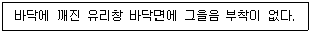
52. 화재조사 및 보고규정상 질문기록서에 기재되어야 하는 사항 중 틀린 것은?
53. 증거물 수집에 관한 사항 중 ( )에 알맞은 내용은?
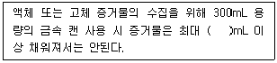
54. 액체촉진제의 특성 중 틀린 것은?
55. 보기에서 화재진압 및 구조 과정에서 현장보존을 위한 주의사항을 모두 고른 것은?
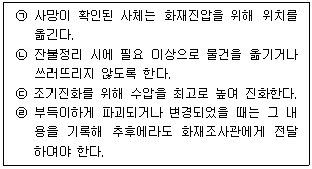
56. 화재증거물수집관리규칙상 증거물 시료용기 중 유리병으로 휘발성 액체를 수집할 경우 마개로 사용할 수 없는 것은?
57. 전신적 생활반응에 해당하는 것은?
58. 화재발생 전·후에 이루어진 사람의 행동이나 기계적인 작동 상황 등을 시간의 흐름 순으로 전개하여 사건을 분석하는 기법은?
59. 화재현장의 증거를 보호하기 위한 방법으로 가장 거리가 먼 것은?
60. 화재증거물수집관리규칙상 화재증거물 수집에 관한 내용으로 명시되지 않은 것은?
4과목: 화재조사보고 및 피해평가
61. 가재도구 화재피해액 산정기준의 간이평가방식 중 주택종류별 가중치는?
62. 화재조사 및 보고규정상 화재현황조사서의 첨부서류로 명시되지 않은 것은?
63. 화재피해액 산정에 있어서 건물화재 피해 설명으로 옳은 것은?
64. 화재조사 및 보고규정상 화재피해액 산정기준 중 틀린 것은?
65. 고층건물 37층 중 4층에서 화재가 최초 발생하여 상층부로 연소 확대한 다음의 사례에서 건물 최초 발화층에서 옥상층으로의 연소확대 경로를 파악할 때 고려해야 할 사항으로 옳은 것은?
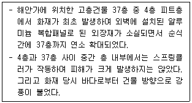
66. 화재조사 및 보고규정상 소방·방화시설 활용조사서의 작성항목으로 명시되지 않은 것은?
67. 화재조사 및 보고규정상 화재현장출동보고서의 보존기간으로 옳은 것은?
68. 화재조사 및 보고규정상 화재원인조사 내용으로 틀린 것은?
69. 화재조사 및 보고규정상 화재피해조사서[인명]에서 사성정도를 사망, 중상, 경상으로 분류하여 작성할 때 중상의 정의로 옳은 것은?
70. 화재조사 및 보고규정상 나이트클럽의 조명시설에서 화재 발생 시 다음의 조건을 참고하여 영업시설의 피해액을 계산한 것으로 옳은 것은?
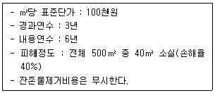
71. 화재피해액산정 매뉴얼에 따른 손해율 30%에 해당하는 피해 정도는?
72. 다음의 현장에 출동한 화재조사관이 화재조사 및 화재증거물 분석 결과를 토대로 국가화재정보시스템에서 방화·방화의심 조사서를 작성하는 과정에서 보기의 항목 중 방화도구(연료), 방화의심 항목을 선택한 것으로 옳은 것은?
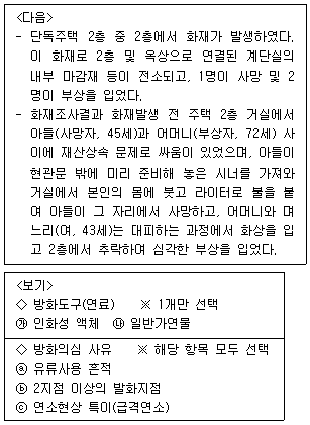
73. 화재조사 및 보고규정상 치외법권지역 화재조사 보고서 작성에 대한 설명으로 옳은 것은?
74. 화재조사 및 보고규정상 화재현황 조사서의 작성에 대한 설명으로 틀린 것은?
75. 화재피해액 산정에 있어서 피해액을 산정하는 방법에 관한 설명으로 옳은 것은?
76. 화재 당시에 피해물의 재구입비에 대한 현재가에 비율을 구하는 식으로 틀린 것은?
77. 화재조사 및 보고규정상 화재 건수의 결정 및 관할구역에 관한 사항으로 명시되지 않은 것은?
78. 화재조사 및 보고규정상 피해물의 종류, 손상 상태 및 정도에 따라 피해액을 적정화시키는 일정한 비율을 의미하는 용어로 옳은 것은?
79. 부동산의 재산피해신고서에 포함되는 항목으로 명시되지 않은 것은?
80. 화재조사 및 보고규정상 화재로 인한 전부손해의 경우 시중매매가격으로 산정할 수 있는 대상이 아닌 것은?
5과목: 화재조사관계법규
81. 화재로 인한 재해보상과 보험가입에 관한 법률상 손해보험회사가 한국화재보험협회의 설립허가를 받으려는 경우 금융위원회에 제출하여야 하는 서류로 틀린 것은?
82. 형법상 실화에 관한 처벌로 ( )에 알맞은 내용은?
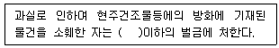
83. 소방기본법령상 화재조사에 관한 전문교육과정의 교육과목 중 소양교육 과목으로 명시되지 않은 것은?
84. 민법상 타인의 생명을 해한 자의 손해배상 책임 대상으로 명시되지 않은 것은?
85. 화재로 인한 재해보상과 보험가입에 과한 법률상 다음의 경우 특수건물의 소유자가 가입하여야 하는 보험의 보험금액 기준 중 ( )에 알맞은 내용은?
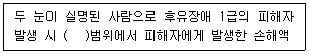
86. 화재조사 및 보고규정상 대형화재·중요화재 및 특수화재 등이 발생하여 조사를 위하여 필요할 경우 조사본부를 설치운영 할 수 있는데 이 때 조사본부장의 책임으로 명시되지 않은 것은? (단, 그 밖의 조사본부 운영 및 총괄에 관한 사항은 제외한다.)
87. 제조물 책임법에 대한 내용으로 틀린 것은?
88. 화재조사 및 보고규정상 다음 표에서 사망자 수와 중상자의 수를 합한 값으로 옳은 것은?
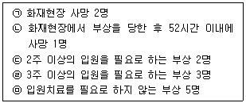
89. 소방기본법령상 화재조사를 실시할 수 없는 자는? (단, 시험은 소방청장이 실시하는 화재조사에 관한 시험을 말한다.)
90. 실화책임에 관한 법률상 실화가 중대한 과실로 인한 것이 아닌 경우 그로 인한 손해배생의무자가 법원에 손해배상액 경감 청구 시 고려사항으로 명시되지 않은 것은? (단, 그 밖에 손해배상액을 결정할 때 고려사항은 제외한다.)
91. 화재조사 및 보고규정상 다음에서 설명하는 용어는?
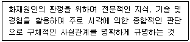
92. 화재로 인한 재해보상과 보험가입에 관한 법률상 명시된 한국화재보험협회의 업무를 모두 고른 것은?
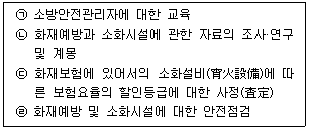
93. 소방기본법령상 시·도지사로부터 소방활동의 비용을 지급받을 수 있는 경우로 옳은 것은?
94. 화재조사 및 보고규정상 건물의 동수 산정 기준으로 틀린 것은?
95. 사법경찰관이 피의자를 심문하기 전에 알려주어야 하는 사항과 가장 거리가 먼 것은?
96. 화재로 인한 재해보상과 보험가입에 관한 법률상 특수건물의 특약부화재보험에 가입하지 아니한 자의 벌칙 기준으로 옳은 것은? (단, 산업재해보상보험 가입 대상이 아님)
97. 소방기본법령상 소방서장이 화재조사를 하기 위하여 관계인에게 보고 또는 자료 제출을 명했을 때 이를 위반하여 보고 또는 제출을 하지 아니한 자에 대한 과태료 기준으로 옳은 것은?
98. 제조물 책임법상 손해배상책임을 지는 지가 손해배상책임을 면하기 위하여 입증하여야 할 사항으로 명시되지 않은 것은?
99. 경범죄처벌법령상 범칙행위의 범위와 범칙금액에 관한 사항 중 다음 범칙행위에 대한 범칙금액은?
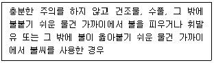
100. 화재조사 및 보고규정상 운행 중인 차량, 선박 및 항공기에서 발생한 화재의 조사책임으로 명시된 것은?